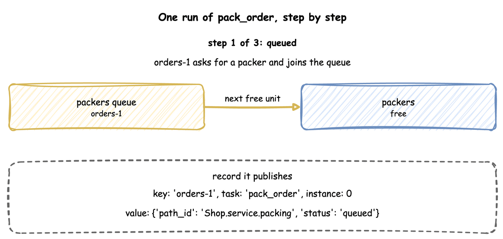

Tasks and Processes: SimulationContext
A task is what one entity does: an order being packed, a return being logged. A process is anything else that runs over time: packers going on a break every hour, a speed that drifts, a shift plan. This page shows how to write a task, what run() does with tasks, and what a task does step by step. Processes shows how to write a process.
What It Is
Both are SimPy generators: functions that yield to wait. The builder and YAML write the common ones for you, and the low-level API writes them by hand. A task waits for what it needs, does its work for a sampled time, publishes an event at each step, and may lead to the next task. A process can do anything a generator can: wait, change values in the registry, publish records or start tasks.
Pages in This Section
- Processes: run a generator alongside the tasks, with an example of processes that interact.
- Signals and Waiting: wait for signals, conditions and child flows, start flows, and run actions when an event happens.
- Failures: when a task fails, what a failure does, and what happens to one nobody handles.
How to Use It
A Task
A task with a service and a resource asks for a unit of the resource, holds it for a time drawn from the service, and releases it. A task with neither takes no time and holds nothing: it publishes its payload at once. Such a task suits a step that only records an event, such as logging a return.
payload is a fixed mapping. A payload that changes per entity is a Python function, called as function(task_id, context):
The function is called with the task id and whatever the caller passes. It also receives entity, upstream and item by keyword when it declares a parameter of that name: the entity, what the previous task handed on, and what a store get took. A function that declares none of them is called without them.
This is ordinary SimPy: packers.request() waits for a unit, env.timeout waits the service time, and leaving the with block releases the unit. The env.publish_event call at each step produces the records.
A task can also take from or add to a store or container (get, put), rank its requests (priority), and name the task that follows it (next). Stores and Containers, Resources and Task Flow describe each.
A Timed Step
A task with a service and no resource is a timed step: work that takes time but needs nothing that can be busy, such as printing a label or waiting for a supplier. It publishes started at once, with no queued event, waits the sampled time, and publishes its finished event. Its wait is 0. It is SimPy's env.timeout: the tests check that it ends at the same simulation time as a plain SimPy timeout in all three APIs (SimPy Compatibility).
Arrivals Start Tasks
An arrival starts one task per arrival. The loop draws a gap from the arrival's distribution, waits for that duration, starts a task for the new entity, and repeats. The task runs on its own while the loop waits for the next arrival.
| docs/snippets/yaml/tasks.yaml:arrival | |
|---|---|
| docs/snippets/pages/tasks.py:builder-arrival | |
|---|---|
spawn= starts the named task for each arrival's entity, whose key is the arrival name and a counter: orders-1, orders-2. The record's instance comes from the task's one counter, which next and other arrivals share, so no two runs of the task share an id. A spawn that names a task never added is refused when run() checks the model.
@app.arrival_loop runs a generator of your own. The loop below starts one return_logged for each return, which is what spawn="return_logged" does in one argument, as the YAML tab writes it. A loop is needed only when it does more than start one task, such as choosing the task from the entity's attributes. context.wait_for_arrival returns the new Entity. Pass it to the task with entity=. A task called without one starts an entity of its own, keyed by the task's name and a counter, such as return_logged-1. The task_id becomes the record's instance. Take it from context.next_instance, the task's one counter.
In the low-level API every loop is started once, before the run:
Records of a Task
Every event of a task carries three fields beside its value: key, the entity's key; task, the task's name; and instance, the number of this run of the task, counted from 0 for each task. The first order of the blueprint in A Task, packed and then labelled:
All five events share the key orders-1, so an order can be followed through every task it passes. The finished event's value is exactly the payload. Records and Telemetry describes every field.
How It Works
What run() Does
run() builds everything the context describes and runs it, in this order:

Until run() is called nothing exists but the description, and the runtime helpers that Builder API lists raise RuntimeError. Teardown runs in a finally block, so the last statistics are published and every sink is flushed even when the run stops with an error or Ctrl+C.
What @app.task Does
@app.task turns your function into a SimPy process that does these steps, publishing a record at three of them:

- If its
balkcondition holds, it publishesbalkedand stops. - If it has a
wait, a resource or aget, it publishesqueuedand starts itspatiencetimer, which runs only while it waits. Then it waits until itswaitends. - It asks for the resource, in the resource's queue order, then takes its
getfrom a store or container, waiting while there is not enough. - It publishes
started, calls your function, and keeps what it returns as the payload. The payload is computed before the service time, so it can use the state of the simulation at that moment. - It waits the service time, drawn from the live distribution.
- It adds its
putto a store or container, waiting while there is no room, and checks itsfailcondition. - It publishes the payload as the finished event, or
failed, and releases the resource. - It fires its
signal(or fails it) and sends itsinterruptaction to the tasks it names. It appliessetto the entity's attributes. Then it starts the next task that itsnextchooses, or itson_failtask, as a new instance for the same entity.
A YAML task and its spawn make the same task and arrival loop that the builder code above makes. The code that runs these steps is TaskRun in desflow/core/task.py. In SimPy terms each task run is one process started with env.process, and each arrival loop is another. SimPy and desflow describes processes.
A process outside a task runs as Processes describes.
Stability and Limits
- Resources are acquired in one order. A task can hold several resources and hand one to the next task, but tasks that acquire two resources in opposite orders are refused: Several Resources.
- An interrupt gives back everything. An interrupted task cancels its waits and releases every unit it holds before it follows its
on_interrupt, so a resumed task queues again behind the requests already waiting: Interruptions. - A finished event is exactly the payload. It has no
statusorpath_idunless the payload includes them. - A condition branch checks after every change. In a model with many waits on conditions and many changes, the work grows in proportion to both.
- Runtime helpers need a running simulation. They raise
RuntimeErrorbeforerun(), as Builder API lists. Call them inside a loop, task or process.